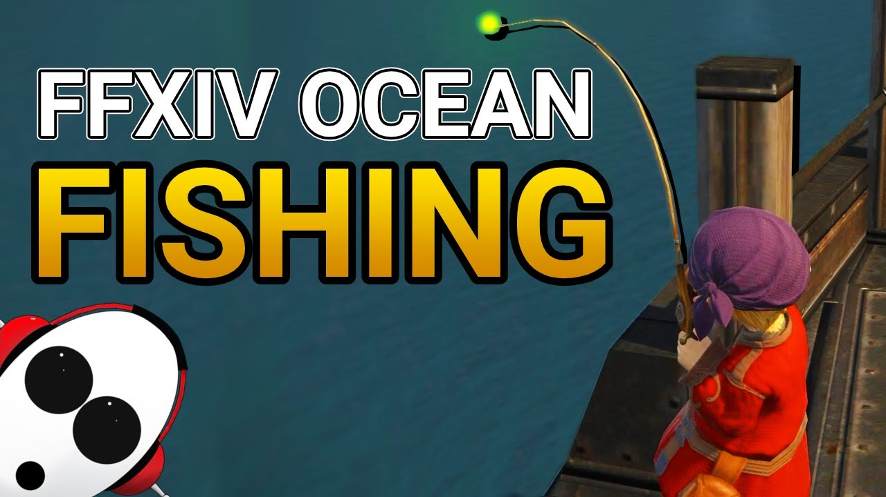

(
(
Final Fantasy XIV - Ocean Fishing Guide
Ocean Fishing is one of the many engaging little mini-games and a favorite activity for several players in Final Fantasy XIV. This guide will go over all you need to know about Ocean Fishing in FF14.

What is Ocean Fishing?
Ocean Fishing is a short voyage on a purpose-built boat where 24 players work together to reel in rare fish. You will be unable to change your ship after you start. It will be necessary to adhere to a schedule. Every two hours, a boat departs. You will be able to participate in it once you finish the Fishing Guild class in Limsa Lominsa.
Final Fantasy XIV: How to Ocean Fish?
Ocean fishing is available to anyone with the Fisher job, even from level one. The steps are as follows:
1). Ocean Fishing can be unlocked by anyone who has completed the level 1 quest "My First Fishing Rod."
2). Speak with Fhilsnoe (X:7.8 Y:14.5) in the Fishermen's Guild in Limsa Lominsa.
3). Accept the quest "All the Fish in the Sea" and head over to the Ferry Docks near the Arcanists' Guild.
4). At the end of the dock, speak with Foerzagyl.
You need to know this isn't content you can jump into whenever you want. Every two hours (Earth time), you will have a 15-minute window to register with Dryskthota at the Lower Decks near the Arcanists' Guild aetheryte (X;3.0 Y:12.7). If you're not sure when ocean fishing starts for your timezone, head to Dryskthota at the docks to see when ocean fishing recruitment begins again and the schedule for the next two days.
You can enter as a party (Ocean Fishing supports 24 players), but the party leader has to be the one that talks to Dryskthota. If you enter solo or with a party smaller than eight players, you will be matchmade with other players.
Final Fantasy XIV: Ocean Fishing Rewards
You will stop by critical locations and have seven minutes to fish up as much as possible. You will be rewarded points for each successful catch, and your experience will scale to your level. Ocean Fishing rewards Fishers level 49 and below with experience points. Between levels 50 and 79, fishers receive experience and Yellow Gatherer's Scrip. At level 80, fishers receive Yellow Gatherer's Scrip but can also receive White Scrip depending on their haul.
But more importantly, there are minions to be gotten and a whole-mount to earn through this activity.
• Major-general minion — Earn 5,000 points on a single ocean fishing trip.
• Gull minion — Encounter three seagull flocks while ocean fishing.
• Dolphin Calf minion — Encounter 3 dolphin pods while ocean fishing.
• Hybodus mount — Earn 10,000 points on a single ocean fishing trip.
Final Fantasy XIV: Ocean Fishing Baits
You want to make sure you bring the correct bait before you set out to the sea. Before heading out, talk to Dryskthota and see which three locations the boat will be stopping at. It helps to bring all of the bait with you as you progress through the various routes, but you can always purchase more while on the boat.
These are all of the bait you want to bring with you or that you can purchase on the boat:
• Krill
• Plump Worm
• Ragworm
• Shrimp Cage Feeder
Final Fantasy XIV: What Are The Ocean Fishing Routes?
These are the locations the boats will sail to and pass by in the game:
• The Southern Strait of Merlthor
• Galadion Bay
• The Northern Strait of Merlthor
• Rhotano Sea
Final Fantasy XIV Ocean Fishing: Strategy
If you aimed for the spectral fish in each zone to trigger a "spectral current." During this phase, you will be able to find rare fish quire easily, helping you score a lot of points quickly.
Each time you target a specific combination of fish in a zone, you will activate a personal Fisher's Intuition buff, which eases the difficulty of catching five-star fish.
Final Fantasy XIV: What Bait Should You Use While Ocean Fishing?
Each zone has its own set of fish and baits requirements:
1). When you unlock Ocean Fishing, you will be rewarded with a Versatile Lure. New fishers can use these to grab quite a few of the fish available.
2). If you are aiming to catch Spectral fish, you'll need the bait below to catch it required to trigger a Spectral Current reliably:
• Krill
• Plump Worm
• Ragworm
You can buy all these from the merchant on the docks, but they cost some Final Fantasy 14 Gil.
3). Players looking to min/max and catch five-star fish with or without the Fisher's Intuition buff will want to grab the following bait as well:
• Shrimp Cage Feeder
• Heavy Steel Jig
• Glowworm
• Rat Tail
4). The following items may make the difference to a high-level player and should be brought along:
• Hi-Cordials
• Peppered Popotoes (or any available GP food)
5). Lower level players will want to bring the following to make the most of the potential experience point gains:
• Cordials
• Any food (for the 3% experience boost)
• Company-Issue Survival Manuals (from Grand Companies)
• Any experience boosting equipment (Brand-New Ring or various pre-order bonuses)
With this, we arrive at the end of our guide on Ocean Fishing & Baits in Final Fantasy 14. So even if you've never fished before, give it a shot. If you want to find out more guides, tips, and updates, please continue to visit the news page of BUYFFXIV4GIL.COM.